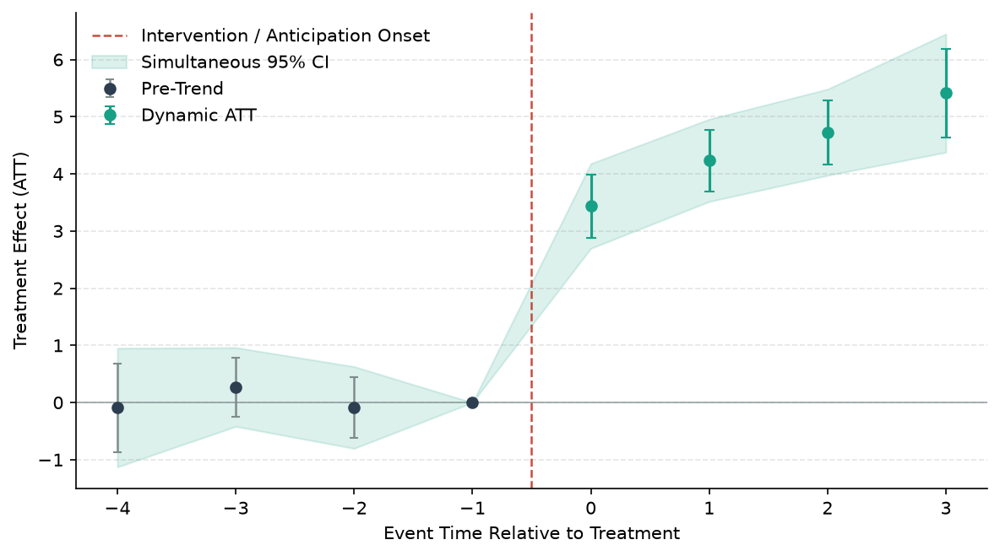

Difference-in-Differences & Event Studies
Callaway–Sant'Anna group-time ATT, Sant'Anna–Zhao Improved DR (IPT+WLS), simultaneous multiplier bands, and Rambachan–Roth HonestDiD sensitivity.
case_mix, and outcomes also trend with case_mix. Unadjusted DiD picks up confounding trend bias (+4.333), while est_method='dr_improved' uses Sant'Anna & Zhao (2020) Inverse Probability Tilting (IPT) + WLS to recover +4.325 cleanly.1. Panel Audit & Improved DR Estimation
Always run audit_panel() before fitting panel estimators to catch duplicate keys, imbalanced rows, reversible treatment paths, or small cluster counts. Then declare an explicit PanelDesign.
import quasi
from quasi.prep.audit import audit_panel
# 1. Pre-flight structural panel audit (duplicates, balance, rollout type, cluster count)
health = audit_panel(df, unit="hospital", time="year", treatment="treated")
print(f"Balanced={health.is_balanced}, Rollout={health.treatment_type}, G={health.cluster_count}, Viable={health.is_viable}")
# 2. Staggered Callaway-Sant'Anna DiD with Improved Doubly Robust (Sant'Anna & Zhao 2020 IPT + WLS)
spec = quasi.PanelDesign(
outcome="score",
unit="hospital",
time="year",
first_treated="first_treated",
covariates=("case_mix",),
est_method="dr_improved", # 'unadjusted', 'dr' (traditional), or 'dr_improved' (IPT+WLS)
control_group="not_yet_treated", # or 'never_treated'
base_period="universal", # relative to e = -1 (recommended for HonestDiD)
b_reps=499,
seed=42,
)
result = quasi.estimate(df, design=spec)
print(result.summary())Balanced=True, Rollout=absorbing_staggered, G=150, Viable=True
[EXPERIMENTAL] Group-time DiD; R parity and inference certification pending.
======================================================================
Staggered DiD | Outcome: score
======================================================================
Identified-cell-weighted ATT: +4.3246 (SE: 0.2387)
p-value: 0.0000
95% CI: [3.8568, 4.7924]
Observations: 1,050; adopting units: 95
Comparison: not_yet_treated; estimator: dr_improved; anticipation: 0; skipped cells: 0
Event study (preperiods: universal baseline; anticipation window is not a placebo):
Event time ATT SE 95% simultaneous band
-4 -0.0889 0.3962 [-1.1288, +0.9509]
-3 +0.2718 0.2632 [-0.4190, +0.9626]
-2 -0.0872 0.2729 [-0.8035, +0.6291]
-1 +0.0000 0.0000 [+0.0000, +0.0000]
+0 +3.4377 0.2827 [+2.6959, +4.1796]
+1 +4.2358 0.2745 [+3.5152, +4.9563]
+2 +4.7275 0.2875 [+3.9730, +5.4819]
+3 +5.4129 0.3946 [+4.3774, +6.4485]
Interpretation requires untreated parallel trends and no anticipation.
======================================================================
result.plot()).2. Group-Time, Cohort & Calendar Aggregations
Quasi keeps every identified (g, t) cell transparent—reporting treated/control support, base period, propensity range, and any excluded cells—so compositional shifts are never hidden.
| cohort | time | event_time | estimate | se | n_treated_clusters | n_control_clusters | n_treated | n_controls | base_time | is_post | is_anticipatory | min_fitted_propensity | max_fitted_propensity |
|---|---|---|---|---|---|---|---|---|---|---|---|---|---|
| 2020 | 2017 | -3 | 0.4049 | 0.3591 | 50 | 100 | 50 | 100 | 2019 | False | False | 0.2971 | 0.3728 |
| 2020 | 2018 | -2 | -0.1869 | 0.3182 | 50 | 100 | 50 | 100 | 2019 | False | False | 0.2971 | 0.3728 |
| 2020 | 2020 | 0 | 3.6489 | 0.3479 | 50 | 100 | 50 | 100 | 2019 | True | False | 0.2971 | 0.3728 |
| 2020 | 2021 | 1 | 4.4358 | 0.3579 | 50 | 55 | 50 | 55 | 2019 | True | False | 0.4558 | 0.4962 |
| 2020 | 2022 | 2 | 4.7350 | 0.3910 | 50 | 55 | 50 | 55 | 2019 | True | False | 0.4558 | 0.4962 |
| 2020 | 2023 | 3 | 5.4129 | 0.3946 | 50 | 55 | 50 | 55 | 2019 | True | False | 0.4558 | 0.4962 |
| 2021 | 2017 | -4 | -0.0889 | 0.3962 | 45 | 55 | 45 | 55 | 2020 | False | False | 0.3735 | 0.5228 |
| 2021 | 2018 | -3 | 0.1238 | 0.3668 | 45 | 55 | 45 | 55 | 2020 | False | False | 0.3735 | 0.5228 |
| 2021 | 2019 | -2 | 0.0235 | 0.4264 | 45 | 55 | 45 | 55 | 2020 | False | False | 0.3735 | 0.5228 |
| 2021 | 2021 | 0 | 3.2031 | 0.4052 | 45 | 55 | 45 | 55 | 2020 | True | False | 0.3735 | 0.5228 |
| cohort | estimate | se | identified_post_cells | contributing_treated_units |
|---|---|---|---|---|
| 2020.0000 | 4.5582 | 0.2942 | 4.0000 | 50.0000 |
| 2021.0000 | 3.9785 | 0.3358 | 3.0000 | 45.0000 |
| calendar | estimate | se | identified_post_cells | contributing_treated_units |
|---|---|---|---|---|
| 2020.0000 | 3.6489 | 0.3479 | 1.0000 | 50.0000 |
| 2021.0000 | 3.8518 | 0.2964 | 2.0000 | 95.0000 |
| 2022.0000 | 4.3933 | 0.3136 | 2.0000 | 95.0000 |
| 2023.0000 | 5.0842 | 0.3153 | 2.0000 | 95.0000 |
3. HonestDiD Pre-Trends Sensitivity (Rambachan & Roth 2023)
Pre-trend hypothesis tests have low power and can distort post-test inference. Use result.sensitivity_analysis() to compute robust confidence intervals under Relative Magnitudes (ΔRM(M̄)) or Smoothness (ΔSD(M)), propagating full pre/post covariance.
# Rambachan & Roth (2023) HonestDiD sensitivity under bounded parallel-trends violations
honest_rm = result.sensitivity_analysis(
method="relative_magnitudes",
m_grid=[0.0, 0.5, 1.0, 1.5, 2.0],
)
honest_sd = result.sensitivity_analysis(
method="smoothness",
m_grid=[0.0, 0.1, 0.25, 0.5],
)
print(f"Relative-magnitudes breakdown M_bar: {honest_rm.breakdown_value}")
print(honest_rm.table.to_string(index=False))| M | identified_set_low | identified_set_high | robust_ci_lower | robust_ci_upper | includes_zero |
|---|---|---|---|---|---|
| 0.0000 | 3.4377 | 3.4377 | 2.8837 | 3.9918 | False |
| 0.5000 | 3.2574 | 3.6181 | 2.7878 | 4.0876 | False |
| 1.0000 | 3.0770 | 3.7984 | 2.6120 | 4.2634 | False |
| 1.5000 | 2.8967 | 3.9788 | 2.4317 | 4.4437 | False |
| 2.0000 | 2.7163 | 4.1591 | 2.2513 | 4.6241 | False |
| M | identified_set_low | identified_set_high | robust_ci_lower | robust_ci_upper | includes_zero |
|---|---|---|---|---|---|
| 0.0000 | 3.3505 | 3.3505 | 2.4007 | 4.3003 | False |
| 0.1000 | 3.2505 | 3.4505 | 2.3808 | 4.3202 | False |
| 0.2500 | 3.1005 | 3.6005 | 2.2872 | 4.4138 | False |
| 0.5000 | 2.8505 | 3.8505 | 2.0529 | 4.6481 | False |
did/DRDID parity verification remains pending.